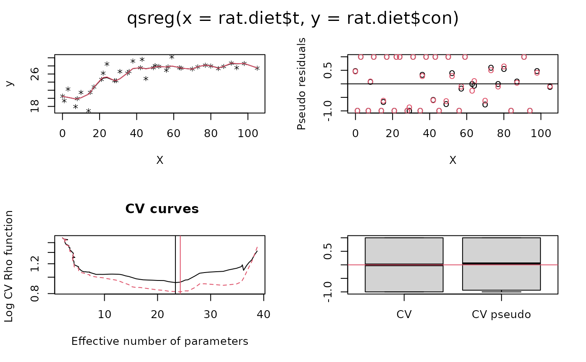
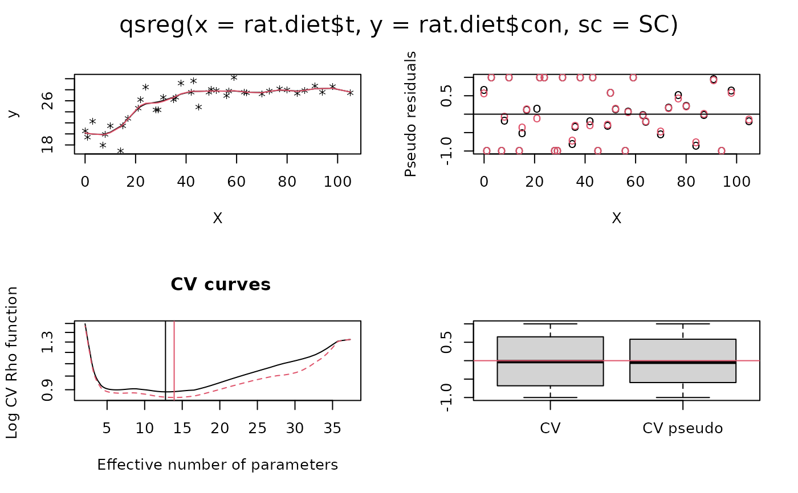
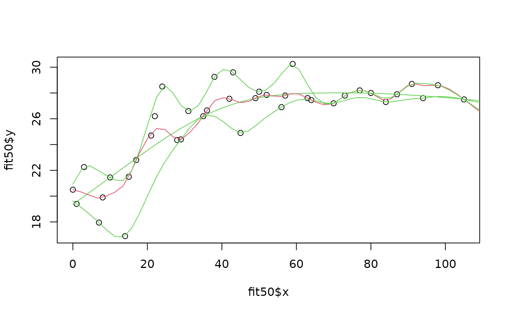

qsreg.RdUses a penalized likelihood approach to estimate the conditional quantile function for regression data. This method is only implemented for univariate data. For the pairs (X,Y) the conditional quantile, f(x), is P( Y<f(x)| X=x) = alpha. This estimate is useful for determining the envelope of a scatterplot or assessing departures from a constant variance with respect to the independent variable.
Vector of the independent variable in y = f(x) + e
Vector of the dependent variable
Values of the smoothing parameter. If omitted is found by GCV based on the the quantile criterion
Maximum number of iterations used to estimate each quantile spline.
Maximum number of iterations to find GCV minimum.
Tolerance for convergence when computing quantile spline.
Cost value used in the GCV criterion. Cost=1 is the usual GCV denominator.
Constant added to the effective degrees of freedom in the GCV function.
Scale factor for rounding out the absolute value function at zero to a quadratic. Default is a small scale to produce something more like quantiles. Scales on the order of the residuals will result is a robust regression fit using the Huber weight function. The default is 1e-5 of the variance of the Y's. The larger this value the better behaved the problem is numerically and requires fewer iterations for convergence at each new value of lambda.
Quantile to be estimated. Default is find the median.
Weight vector default is constant values. Passing nonconstant weights is a pretty strange thing to do.
Number of points used in CV grid search
Minimum value of log( lambda) used for GCV grid search.
Maximum value of log( lambda) used for GCV grid search.
Minimum value of effective degrees of freedom in model used for specifying the range of lambda in the GCV grid search.
Maximum value of effective degrees of freedom in model used for specifying the range of lambda in the GCV grid search.
Define the minimum and maximum values for the CV grid search in terms of the effective number of parameters. (see hmin, hmax) Object of class qsreg with many arguments similar to a sreg object. One difference is that cv.grid has five columns the last being the number of iterations for convergence at each value of lambda.
This is an experimental function to find the smoothing parameter for a quantile or robust spline using a more appropriate criterion than mean squared error prediction. The quantile spline is found by an iterative algorithm using weighted least squares cubic splines. At convergence the estimate will also be a weighted natural cubic spline but the weights will depend on the estimate. Alternatively at convergence the estimate will be a least squares spline applied to the empirical psuedo data. The user is referred to the paper by Oh and Nychka ( 2002) for the details and properties of the robust cross-validation using empirical psuedo data. Of course these weights are crafted so that the resulting spline is an estimate of the alpha quantile instead of the mean. CV as function of lambda can be strange so it should be plotted.
# fit a CV quantile spline
fit50<- qsreg(rat.diet$t,rat.diet$con)
# (default is .5 so this is an estimate of the conditional median)
# control group of rats.
plot( fit50)
#> plot window will lay out plots in a 2 by 2 matrix

predict( fit50)
#> [1] 20.49998 20.40356 20.25621 19.84628 19.89900 20.14532 20.99036 21.50002
#> [9] 22.79981 24.83986 25.14912 25.28184 24.40011 24.39903 24.83234 26.21044
#> [17] 26.64899 27.37894 27.55002 27.45862 27.25645 27.60002 27.74726 27.84999
#> [25] 27.72075 27.80000 27.98235 27.60001 27.44900 27.19902 27.79998 28.19900
#> [33] 27.99998 27.42413 27.89900 28.69814 28.57225 28.59999 27.50000
# predicted values at data points
xg<- seq(0,110,,50)
plot( fit50$x, fit50$y)
lines( xg, predict( fit50, xg))
# A robust fit to rat diet data
#
SC<- .5* median(abs((rat.diet$con- median(rat.diet$con))))
fit.robust<- qsreg(rat.diet$t,rat.diet$con, sc= SC)
plot( fit.robust)
#> plot window will lay out plots in a 2 by 2 matrix

# The global GCV function suggests little smoothing so
# try the local
# minima with largest lambda instead of this default value.
# one should should consider redoing the three quantile fits in this
# example after looking at the cv functions and choosing a good value for
#lambda
# for example
lam<- fit50$cv.grid[,1]
tr<- fit50$cv.grid[,2]
# lambda close to df=6
lambda.good<- max(lam[tr>=6])
fit50.subjective<-qsreg(rat.diet$t,rat.diet$con, lam= lambda.good)
fit10<-qsreg(rat.diet$t,rat.diet$con, alpha=.1, nstep.cv=200)
fit90<-qsreg(rat.diet$t,rat.diet$con, alpha=.9, nstep.cv=200)
# spline fits at 50 equally spaced points
sm<- cbind(
predict( fit10, xg),
predict( fit50.subjective, xg),predict( fit50, xg),
predict( fit90, xg))
# and now zee data ...
plot( fit50$x, fit50$y)
# and now zee quantile splines at 10% 50% and 90%.
#
matlines( xg, sm, col=c( 3,3,2,3), lty=1) # the spline
